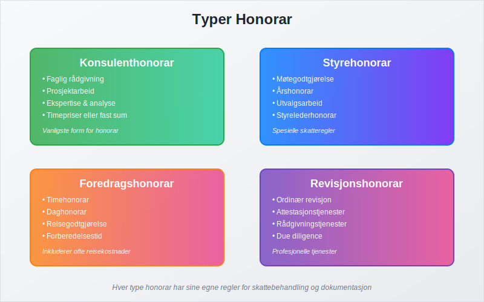
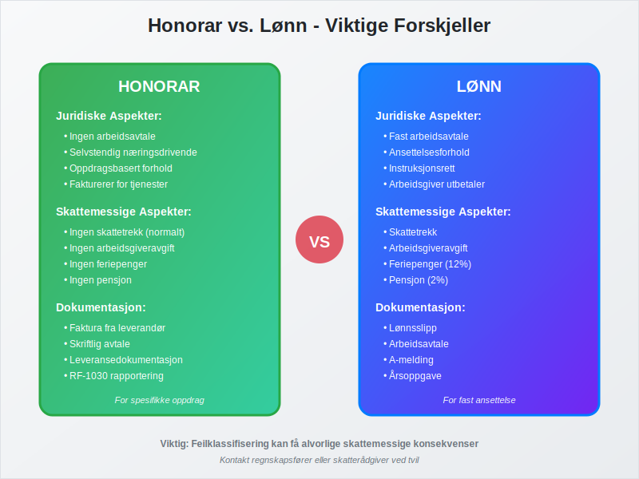
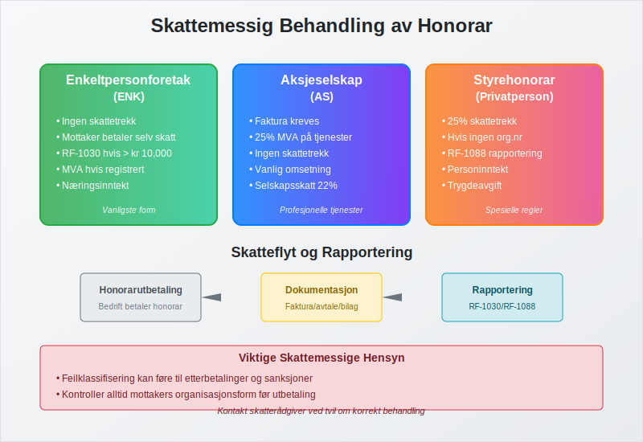
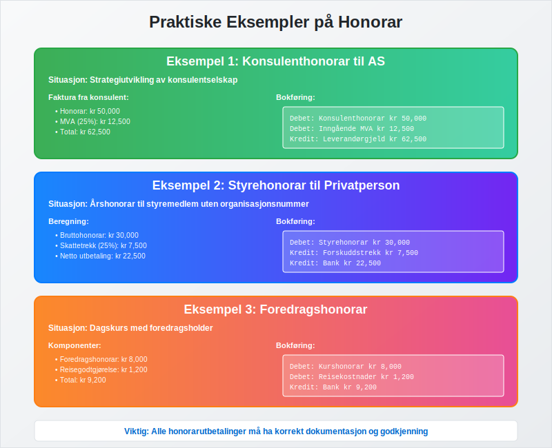

Honorar i regnskapssammenheng refererer til vederlag som utbetales til personer for utførte tjenester, uten at det foreligger et tradisjonelt arbeidsforhold. Dette er et viktig konsept i regnskapsføring som krever spesiell oppmerksomhet når det gjelder bokføring og skattemessig behandling.
Honorar skiller seg fra vanlig lønn ved at det utbetales for spesifikke oppdrag eller tjenester, ofte til eksterne konsulenter, styremedlemmer, eller andre fagpersoner. Korrekt håndtering av honorar er essensielt for å opprettholde god internkontroll og for å sikre at bedriften overholder gjeldende bokføringsregler.
Seksjon 1: Typer Honorar

Honorar kan kategoriseres i flere hovedtyper, hver med sine spesifikke regler for behandling og dokumentasjon:
1.1 Konsulenthonorar
Konsulenthonorar er den vanligste formen for honorar og utbetales til eksterne rådgivere og konsulenter for:
- Faglig rådgivning: Juridisk, økonomisk eller teknisk bistand
- Prosjektarbeid: Spesifikke oppdrag med definert leveranse
- Ekspertise: Spesialisert kunnskap innenfor bestemte fagområder
- Analyse og utredning: Markedsanalyser, strategiutvikling
Konsulenthonorar faktureres normalt basert på timepriser eller fast prosjektsum, og konsulenten er ansvarlig for egen fakturering.
1.2 Styrehonorar
Styrehonorar utbetales til styremedlemmer for deres arbeid i bedriftens styre:
- Møtegodtgjørelse: Fast beløp per styremøte
- Årshonorar: Fast årlig godtgjørelse for styreverv
- Utvalgsarbeid: Tillegg for arbeid i underutvalg
- Styrelederhonorar: Ekstra godtgjørelse for styreleder
| Bedriftsstørrelse | Typisk Årshonorar |
|---|---|
| Små AS | kr 20,000 - 50,000 |
| Mellomstore bedrifter | kr 50,000 - 150,000 |
| Store selskaper | kr 150,000 - 500,000+ |
Les mer i vår detaljerte artikkel om styrehonorar: Styrehonorar.
1.3 Foredragshonorar
For foredragsholdere og kursledere utbetales honorar basert på:
- Timehonorar: Fast sats per undervisningstime
- Daghonorar: Fast beløp for heldagskurs
- Reisegodtgjørelse: Dekning av reisekostnader
- Forberedelsestid: Honorar for kursutvikling
1.4 Revisjonshonorar
Revisjonshonorar utbetales til revisorer for:
- Ordinær revisjon: Årlig gjennomgang av regnskap
- Attestasjonstjenester: Spesielle erklæringer og bekreftelser
- Rådgivningstjenester: Regnskapsmessig og skattemessig rådgivning
- Due diligence: Gjennomgang ved oppkjøp eller salg
1.5 Tantieme
Tantieme er en variabel bonus til styre eller ledelse basert på selskapets overskudd. Les mer i vår detaljerte artikkel: Tantieme.
Seksjon 2: Honorar vs. Lønn - Viktige Forskjeller

Det er viktig å forstå forskjellene mellom honorar og lønn for korrekt behandling. For spesifikke arbeidstyper i private hjem finnes også lett salær som et alternativ med skattemessige fordeler.
2.1 Juridiske Forskjeller
Honorar:
- Ingen arbeidsavtale eller ansettelsesforhold
- Oppdragstaker er selvstendig næringsdrivende
- Ingen rett til feriepenger eller sykepenger
- Oppdragstaker fakturerer for tjenestene
Lønn:
- Fast ansettelsesforhold med arbeidsavtale
- Arbeidsgiver har instruksjonsrett
- Rett til feriepenger og sosiale ytelser
- Arbeidsgiver trekker skatt og avgifter
2.2 Skattemessige Forskjeller
| Aspekt | Honorar | Lønn |
|---|---|---|
| Skattetrekk | Nei (normalt) | Ja |
| Arbeidsgiveravgift | Nei | Ja |
| Feriepenger | Nei | Ja |
| Pensjon | Nei | Ja |
Seksjon 3: Skattemessig Behandling av Honorar

Den skattemessige behandlingen av honorar avhenger av flere faktorer:
3.1 Honorar til Enkeltpersonforetak
For enkeltpersonforetak gjelder:
- Ingen skattetrekk: Mottaker er selv ansvarlig for skatt
- Rapportering: Honorar rapporteres på RF-1030 hvis over kr 10,000 per år
- Merverdiavgift: Kan være aktuelt hvis mottaker er MVA-registrert
3.2 Honorar til Aksjeselskap
Når honorar utbetales til aksjeselskap:
- Faktura kreves: AS må sende faktura for honoraret
- MVA-behandling: Normalt 25% MVA på tjenester
- Skattetrekk: Ingen skattetrekk fra oppdragsgiver
- Rapportering: Rapporteres som vanlig omsetning
3.3 Særlige Regler for Styrehonorar
Styrehonorar har spesielle regler:
- Skattetrekk: 25% skattetrekk hvis mottaker ikke har organisasjonsnummer
- Rapportering: Rapporteres på RF-1088 (Oppgave over utbetalt styrehonorar)
- Grenseverdier: Ulike regler avhengig av beløpsstørrelse
Seksjon 4: Bokføringsprinsipper for Honorar
Korrekt bokføring av honorar krever forståelse av underliggende regnskapsprinsipper:
4.1 Kontoplan og Kontering
Honorar bokføres normalt på følgende kontotyper:
- Konsulenthonorar (konto 6500-6599): For eksterne konsulenter
- Revisjonshonorar (konto 6560): Spesifikt for revisjonstjenester
- Styrehonorar (konto 6570): For styremedlemmer
- Andre honorar (konto 6580-6599): For øvrige honorarutbetalinger
4.2 Bilagsbehandling og Dokumentasjon
Alle honorarutbetalinger må dokumenteres gjennom bilagsføring:
- Faktura: Fra honorarmottaker (hvis AS eller ENK)
- Avtale: Skriftlig avtale om honorarets størrelse og betingelser
- Leveransedokumentasjon: Bevis på utført arbeid
- Godkjenning: Fra autorisert person i organisasjonen
4.3 Periodisering og Timing
Honorar skal bokføres i den perioden tjenesten er utført, ikke nødvendigvis når betalingen skjer. Dette følger periodiseringsprinsippet i regnskapet.
Seksjon 5: Praktiske Eksempler

Eksempel 1: Konsulenthonorar til AS
En bedrift engasjerer et konsulentselskap for strategiutvikling:
Faktura fra konsulent:
- Honorar: kr 50,000
- MVA (25%): kr 12,500
- Total: kr 62,500
Bokføring:
Debet: Konsulenthonorar kr 50,000
Debet: Inngående MVA kr 12,500
Kredit: Leverandørgjeld kr 62,500
Eksempel 2: Styrehonorar til privatperson
Utbetaling av styrehonorar på kr 30,000 til privatperson:
Beregning:
- Bruttohonorar: kr 30,000
- Skattetrekk (25%): kr 7,500
- Netto utbetaling: kr 22,500
Bokføring:
Debet: Styrehonorar kr 30,000
Kredit: Forskuddstrekk kr 7,500
Kredit: Bank kr 22,500
Eksempel 3: Foredragshonorar
Honorar til foredragsholder for dagskurs:
Komponenter:
- Foredragshonorar: kr 8,000
- Reisegodtgjørelse: kr 1,200
- Total: kr 9,200
Bokføring:
Debet: Kurshonorar kr 8,000
Debet: Reisekostnader kr 1,200
Kredit: Bank kr 9,200
Seksjon 6: Internkontroll og Rutiner
Effektiv håndtering av honorar krever etablerte rutiner og kontroller:
6.1 Godkjenningsrutiner
Alle honorarutbetalinger må gjennom attestering:
- Saklig kontroll: Er honoraret rimelig i forhold til utført arbeid?
- Formell kontroll: Er dokumentasjonen komplett?
- Budsjettmessig kontroll: Er honoraret innenfor budsjett?
- Juridisk kontroll: Er alle formelle krav oppfylt?
6.2 Avtaler og Kontrakter
Bedrifter bør etablere skriftlige avtaler som dekker:
- Arbeidsomfang: Detaljert beskrivelse av oppdraget
- Honorarets størrelse: Fast beløp eller timepris
- Betalingsbetingelser: Når og hvordan honorar utbetales
- Leveransekrav: Hva som skal leveres og når
6.3 Rapportering og Oppfølging
Månedlig oppfølging:
- Oversikt over utbetalte honorar
- Sammenligning med budsjett
- Kontroll av dokumentasjon
Årlig rapportering:
- RF-1030 for honorar over kr 10,000
- RF-1088 for styrehonorar
- Årsoppgave til Skatteetaten
Seksjon 7: Juridiske Aspekter og Compliance
7.1 Oppdragsloven
Honoraroppdrag reguleres av oppdragsloven:
- § 1: Definisjon av oppdragsforhold
- § 2: Oppdragstakerens plikter
- § 15: Rett til vederlag (honorar)
7.2 Skatteloven og Forskrifter
Skattemessig behandling reguleres av:
- Skatteloven § 5-1: Definisjon av skattepliktig inntekt
- Skatteloven § 5-20: Honorar og andre ytelser
- FSFIN: Detaljerte regler for honorarbehandling
7.3 Bokføringsloven
Bokføringsloven stiller krav til:
- Dokumentasjon: Alle honorartransaksjoner må dokumenteres
- Oppbevaring: Bilag må oppbevares i minimum 5 år
- Sporbarhet: Klar sammenheng mellom avtale, levering og betaling
Seksjon 8: Digitale Løsninger og Automatisering
8.1 Moderne Honorarhåndtering
Digitale løsninger kan effektivisere honorarprosessen:
- Avtalestyring: Digitale kontrakter og godkjenningsflyt
- Timeregistrering: Automatisk registrering av arbeidstid
- Fakturaautomatisering: Automatisk generering av honorarfakturaer
- Integrasjon: Direkte kobling til regnskapssystem
8.2 Compliance og Kontroll
Digitale systemer kan forbedre:
- Automatisk rapportering: Til Skatteetaten og andre myndigheter
- Budsjettovervåking: Sanntidsoppfølging av honorarkostnader
- Dokumentlagring: Sikker oppbevaring av avtaler og bilag
- Revisjonslogg: Komplett sporbarhet av alle transaksjoner
Seksjon 9: Vanlige Feil og Fallgruver
9.1 Feilklassifisering
Vanlige feil:
- Behandle ansatte som honorarmottakere
- Glemme skattetrekk på styrehonorar
- Manglende MVA-behandling
- Feil kontering i regnskapet
9.2 Dokumentasjonsfeil
Typiske mangler:
- Manglende skriftlige avtaler
- Utilstrekkelig leveransedokumentasjon
- Manglende godkjenning
- Feil i rapportering til myndighetene
9.3 Forebyggende Tiltak
- Opplæring: Sikre at ansvarlige forstår regelverket
- Rutiner: Etablere klare prosedyrer for honorarhåndtering
- Kontroller: Regelmessig gjennomgang av honorarutbetalinger
- Rådgivning: Bruke ekstern ekspertise ved usikkerhet
Konklusjon
Honorar er en viktig del av moderne forretningsdrift som krever nøye håndtering for å sikre korrekt regnskapsmessig og skattemessig behandling. Ved å forstå forskjellene mellom honorar og lønn, etablere gode rutiner for dokumentasjon og godkjenning, og holde seg oppdatert på gjeldende regelverk, kan bedrifter håndtere honorarutbetalinger på en effektiv og regelkonform måte.
Korrekt håndtering av honorar bidrar ikke bare til å oppfylle juridiske krav, men også til å opprettholde god internkontroll og økonomisk oversikt i bedriften. Med de rette systemene og prosedyrene på plass, kan honorar være et verdifullt verktøy for å få tilgang til spesialisert kompetanse og ekspertise.